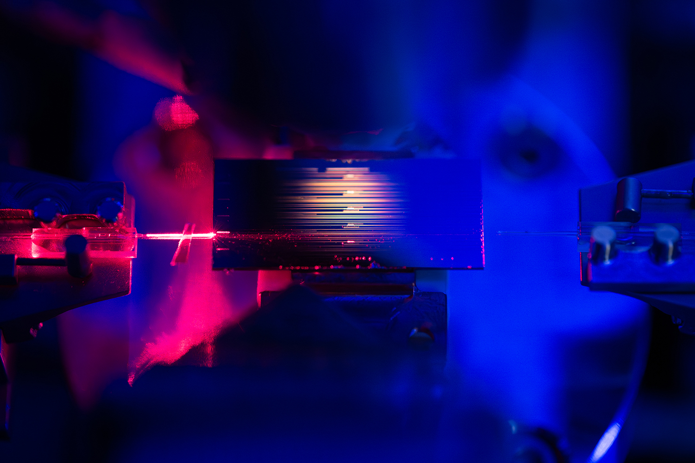

An optical amplifier small and efficient enough to live on a chip
Dean†, Park†, et al., "Low-power integrated optical amplification through second-harmonic resonance," Nature 649, 1159 (2026). † co-first author
Almost every optical system eventually needs to make light stronger — to push a signal down a fiber, read out a faint sensor, or drive the next stage of a circuit. On a chip, that has always been the hard part. Compact optical amplifiers are notoriously power-hungry, and the efficient ones are bulky lab instruments.
We built an amplifier that breaks that trade-off. Instead of brute-forcing the gain, our device recycles energy through a resonant design: it traps the "pump" light and its second harmonic in the same tiny structure so the same photons do useful work over and over. The payoff is dramatic — the chip intensifies light roughly 100× (>17 dB of gain) on only a few hundred milliwatts of power, an order-of-magnitude leap over previous integrated amplifiers, while adding very little noise and working across a broad slice of the spectrum.
"Low power" is what makes it matter. An amplifier this efficient could run on a battery, which opens the door to optical technology inside everyday devices — biosensors, portable diagnostics, data-communication links, and compact light sources — rather than only on an optical table.
